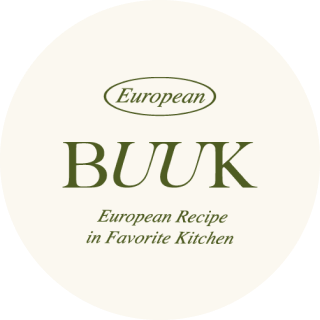

ABOUT
European recipe in favorite kitchen
전 세계의 다양한 나라를 컨셉 인테리어로 기획된 유러피안 F&B BUUK(이하 비유유케이)는
평온하고 품격있으며, 질서정연한 외식업 문화를 만들고 있습니다.
저희는 지속적인 개발과 성장을 통해 대한민국을 대표하는 외식업 브랜드를 만들려고 합니다.
 부엌간 부엌간 차이니즈 카페 드 부엌
European recipe in favorite kitchen
전 세계의 다양한 나라를 컨셉 인테리어로 기획된 유러피안 F&B BUUK(이하 비유유케이)는
평온하고 품격있으며, 질서정연한 외식업 문화를 만들고 있습니다.
저희는 지속적인 개발과 성장을 통해 대한민국을 대표하는 외식업 브랜드를 만들려고 합니다.